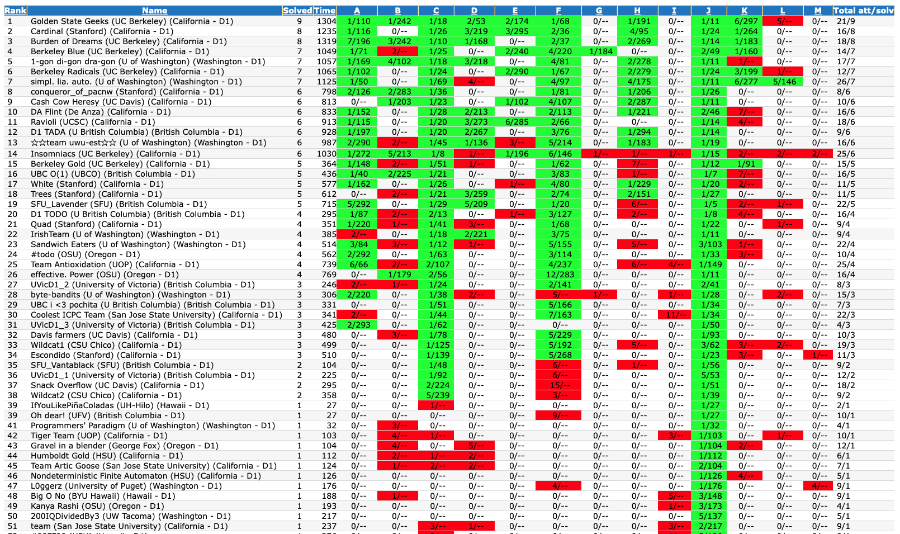

February 1st-14th
Round 848
Problems Solved: A, B, C?
New Rating: 1860 (+25)
Performance: 1924
Congratulations, my performance on this contest has just won the “Luckiest Contest Award of 2023”. There may be 10 more months in the year but I’m pretty confident this contest has already won this award. First off, I ended up gaining rating even though my progress on Problem D was equivalent to brute forcing the expected total values. You can argue that I had a dp solution in theory since I figured out the expected number of operations but I did not really have a practical idea as to how to implement my solution since it required finding infinite sums. Not to mention that it might have been an O(n^2) solution as well.
Part of the reason I gained rating was because of Problem B. The question itself was pretty fair difficulty wise in theory. The real issue is that this might be one of the most confusingly written problems I’ve ever looked at. I think part of the issue was that usually when an array satisfies a specific constraint it would be called “good” and it was weird having it the other way around. Normally taking 18 minutes to solve B for me isn’t ideal, but it just happened that this was very fast for this contest.
Then there is Problem C. Honestly, I’m not really on board with C being a brute force problem. You could argue that the brute force solution requires knowledge on runtime since the worst case would take O(xn), where x is 10 choose 5 = 252. Normally I’d have preferred some sort of more algorithmic based question in C; you could argue that the difficulty comes from being able to iterate through the combinations, but Python as from itertools import combinations to trivialize this issue. Hence why I solved this problem in 19 minutes and gained rating solely from being fast.
But, it gets better. Before the main tests, my solution took 561ms. I thought this meant that my solution was easily fast enough to pass the 2 second time limit since pretests usually have a few tests that use the maximum constraints possible. Turns out the 561ms time was incredibly weak because after main tests, I (luckily) passed main tests with four milliseconds to spare. Yep. 4ms. A 2 second time limit, and my solution took 1996ms. Turns out the O(252n) test wasn’t even used in pretests and was instead the final 28th test. To say I had incredible luck is an understatement.
It still does not end there. Here you can see the questionably implemented solution I got accepted:
I actually got my first successful hack. And it’s on myself. In score() where I was evaluating each possible combination, I had an O(n^2) method being used to create the lookup table for the characters that could be changed. Normally this isn’t a big deal since there were only up to 10 unique characters in each test case, so a difference between 100 operations and 15 operations wouldn’t be that bad. This does not take into fact that there could be up to 10000 testcases in a single testcase. Inexplicably, it seems like there was only one actual main test used to try and test the time limit which involved 1000 test cases of 100 characters each. All I had to do was increase the test case count to abuse the O(n^2) method, and just like that, I TLEd my own solution. To top it all off, uphacking is restricted to CM and above. I had dropped to Expert, but the previous contest at this time was rolled back for plagiarism checks, so I had CM status by 2 elo points which allowed for this uphack. Unbelievable. In short, my solution was correct but the sloppiness in implementation went hilariously unpunished. An absolute miracle.
It turns out that even with my sloppy execution, basic cleanup still results in TLE on additional test cases. The real slowdown ended up being from my over reliance on dictionaries. It seems like even though dictionaries are O(1) access in theory, even without hash collisions they are still significantly slower than basic array lookups, and this proved to be the difference in my later upsolve. Best part is that you can see the test case to self hack myself as test case number 37. The changes made sped up the program by about 4.5 times, and there is still another dictionary that can be removed for significant speed improvement.
Round 851
Problems Solved: A, B, C
New Rating: 1863 (+3)
Performance: 1870
My run on this contest felt very mediocre. It’s one of those contests where I didn’t really have much of a clue how to do Problem D (the most progress I made was trying to determine some sort of dp, but I had no clue where to begin), but I ended up completing C and the problems before it in about 30 minutes. This is also reflected as the gap between C and D in solve rate made this somewhat a SpeedForces contest. Partial underwhelment likely came from the fact that the first 3 questions were mainly constructive problems where I found the solution relatively easily, but then the dp problem was one I felt I should’ve had better chances on. This also marks the third contest in a row without a A-D completion which is something I have to be consistent at to even think about reaching CM. It is still decent in that I’ve been very consistent over the last month or two, but this is at the expense of marginal improvement in skill cap. In the meantime, ICPC contests are coming up soon, and much of my practice recently has been more focused for that. There are key differences in the two contests that are worth noting that I’ll touch upon in the next recap after our team has competed at regionals.
February 15th-28th
By the time I post this update the Pacific Northwest ICPC 2023 Regionals will have already happened. This year the contest format returns to its standard in person setup which means being the sole Python coder on my team, I am pretty much going in this without codebook. In fairness in recent practices I didn’t end up using it much as my role is more of a ad-hoc/constructive algorithm solver. There are some contests that need to be recapped first:
Educational Round 143
Problems Solved: A, B, C, D
New Rating: 1843 (-20)
Performance: 1780
My recap for this contest can be summed up in two points:
Firstly, I’m reaching the point at which my rating is limited more by skillcap than consistency. Problem D tends to be more consistent now assuming it’s not a tree question, but the difference in perceived difficulty and progress I find within D and E is astounding. Most of the time I’m still trying to determine how E is solved, let alone the implementation, and much of this gap is attributed to lacking more advanced competitive programming knowledge, both in theory and practical. Much of this can be remedied through cp-algorthims and implementing it to add in the library (which will get further updates), but practical practice is a different story. Interestingly I may consider going back to Leetcode practice as it’s useful for learning new concepts but instead focusing on mainly Hard difficulty problems; many of those require more advanced techniques
The second point is that I’m still prone to somehow imploding on Python syntax. I have done better recently with avoiding inane errors but it cost me on C this time. Had I not screwed up on the first submission I finish with a penalty score 54 minutes lower (93 total) and probably gain about 30 elo. My solution was schematically correct. The cause of the error is in the function call
bsearch(ar[k],dr[k:],v). All that needs to be known is that this was calling a binary search query on each suffix of the array, so in theory with n total elements this would be O(n log n).ar[k]andvwere normal int values being passed to the function.dr[k:]was intended to pass a reference to a section of the array, normally passing arrays to functions as parameters passes a reference; if you change the array in the function, the changes will remain in the actual array. What happened here was that by specifying only a part of the array, the program made a clone ofdr, took only the given segment, and then passed that to the array, leaving the originaldrreference unpassed. This cloning was done on eachbsearchcall thus increasing the run time to O(n^2) and screwing me over. Much agony was had, but to be fair, this was an “educational” contest.
Starters 78
Problems Solved: A, B, C, D, E
New Rating: 1618 (+62)
Performance: About 2472
Yep. Surprise, I actually participated in a CodeChef contest. It’s been almost 2 years since I last did one, mainly due to the contest schedule rarely being aligned with mines. It just happened that with reading week and no Codeforces contests happening recently all of the stars aligned for me to enter this contest. I also felt the need to try and “update” my rating on this site. When I was doing contests two years ago it was very casual and I had little theoretical knowledge. On top of that, Codechef’s recent rating update meant I was inexplicably placed in Division 3 for 2 star (rating 1400-1600) coders. So the scenario is that I’m in a 3 hour contest with no submission penalty, against 3414 other coders. Keep in mind that new accounts are placed in Division 4 and that Codechef ratings tend to be higher than Codeforces ratings by a significant margin.
I was expecting myself to dominate in this contest because I knew I was being underrated. What I did not expect was clear 2nd place. I pretty much held the lead until the last hour of the contest, which was when another coder who was even more underrated than I was pretty much ran through all seven problems in the contest in about an hour. Congrats.
What makes this contest hilarious is that CodeChef’s new rating system is broken. I gained only 62 rating from this contest, which is pretty weird when nearly everyone else in the top 100 were gaining more, many seeing gains in the triple digits. This can be explained by the rating system having less confidence in coders with fewer contests completed, which explains why the contest winner ended up gaining 609 ELO, but whatever this system uses to calculate rating confidence, time between contests is not considered in the slightest. I did 13 contests before this one which seemingly gives the system reason enough to place maximum confidence in my hilariously underrated 1556 ELO. Thus, we have a scenario where I solve a nearly 7 star level problem, yet my rating gain brings me from 2 star to the bottom of 3 star. To top it all off, had I created a new account, this performance would’ve resulted in me being around 1765. This is 147 points higher, and I’d still have potential for rapid gain since the system would be less confident in this new account.
Thus, I conclude that in CodeChef I am unironically in ELO hell. When you perform around 800 ELO above your rating and only gain 62 out of it, it’s pretty scuffed. I’m not pulling this number out of thin air. The CodeChef rating system is based off of ELO-MMR, so if we consider that I beat 3413 out of 3414 other coders in this contest, then by this calculator, I “performed” 982 ELO above the average. Assuming the average ELO of someone in division 3 is 1490 ELO due to it being more bottom loaded, this results in a “2472” performance, which lines up with the problems I solved. You might wonder why I bothered to calculate all of this. I guess I like to do math shenanigans. It’s not because I’m coping from a recent contest even though I’m writing this on March 1st. Nope, not in the slightest.
A quick rundown of SOLVEMORE and BALSUFF
These were the problem “D” and “E” of the contest and both are good for reflection as they both involve fundamental ideas. SOLVEMORE follows a very common pattern of “calculating a relatively cheap subproblem and aggregating the results to get the answer”. In this case, we have no idea which problem is optimal to do last to take advantage of the break time. (It’s trivially determined that taking advantage of the break time rule on the last problem will be at least as good as not doing so). What we can do is given which task is last, determine how many other tasks are possible because choosing the remaining tasks can be done greedily, prioritizing lowest sum of solve and break time. This process can be optimized by pre computing the times for each task, sorting them, keeping a running sum of the cheapest x tasks, and then running a modified binary search. In total this solution should take O(n log n) time.
BALSUFF is a constructive algorithm that requires a sort of greedy solution as well. Part of the problem is making the data easier to process beforehand, for me I intentionally setup my input code to return a “list of tuples” stating the letter in the string and its frequency in reverse alphabetical order (in practice two normal arrays were used to store this data). Then you can build the string in reverse order, in general placing the highest lexicographical letter each time.ICPC Pacific Northwest 2022

I’ll be quite blunt, my performance on this contest was a shitshow. To sum it up that succintly is mercy, and while I do try to keep this archive as is, I’ve decided to remove several parts of this log, mainly since while I am okay with it being viewable and if someone really wanted to for the full experience they could, I’d prefer not to display the misery here in a public setting. But I will give a synopsis summary of what was removed:
SFU Lavander ended up solving 5 problems; I myself was only responsible for one of these and that was a borderline pity problem (F).
I also spent 6 attempts and roughly 4 hours on my own failing at problem H Branch Manager, also burning roughly half the team’s computer time in the contest.
The solution I had ranted about Branch Manager discussed finding a new node’s ancestors with the current path, which is technically correct but absurdly convoluted. The simplest method is to just eject the last node in the current path and replace it with the next child if it exists and to repeat this until no further nodes can be accessed.
I contemplated making this contest recap a Days of Our Programmers type recap to cope emotionally. Thing is that it only works on funny implosions, where as this was just sad. I did note this was worse than Pinely Round 1 (see Nov 2022 archive log)
I left a few bits of this contest recap in at the end of month recap. The parts removed are more emotional. There also exists an actual private log which I refuse to elaborate on.
Alas, I suppose to understand the progress one has made the failures have to be acknowledged. If it’s anything, when I was writing Days of Our Programmers there was a saying I had for myself, The stars shine brightest in the darkness. This contest was the start of said darkness, but ultimately did eventually lead to the bright success of the North American Championship in 2026.
Educational Round 144
Problems Solved: A, B, C
New Rating: 1849 (+6)
Performance: 1864
After the disaster that was ICPC, I can proudly say that with this contest I am back in the glorious confines of mediocrity. I’m not even sure if this sarcasm is authentic because this contest was a case where my lack of ability on harder questions was a blatant issue here, but we also have to consider that going from an outright failure in a contest to a middling result is an improvement. I am still upsolving D so this reflection does not cover that problem yet, but C, my first two submissions were wrong because oddly enough on some edge cases my program printed out float values instead of int values. It didn’t end up affecting my ranking much, but it’s still a very odd error. What in the world could be the grand mystery behind this anomaly???
# initial header template
for i in range(readint()):
l,r = readints()
ansa = 0 # notice how ansa starts at 0
x = l
while x <= r:
ansa += 1 # notice how ansa only increases
x *= 2
ms = r//(2**(ansa-1))
three = -1
if ansa != -1: # please tell me when ansa will ever be -1.
three = r//(2**(ansa-2)*3)
# later code that calculates answer, three var is usedSo I guess I’m back to idiotic typo blunders now. Somehow I’m not that surprised. On the plus side, I at least prevented absolute catastrophe by noticing this error relatively quickly.
Thus concludes another month of trials and tribulations in competitive programming. This was a difficult month as most of the improvement I supposedly found this week was in consistency. That narrative pretty much died off after ICPC, and alongside it Google’s programming competitions. As of writing this it has been about two weeks since Google announced that Google Code Jam and all other competitions will not be happening this year, and it’s pretty much set in stone that it’s over since there is a Farewell Round in April. I found this out the day after Starters 78, so it just about makes February 23rd to 25th one of the worst times in competitive programming personally. I did not record it much here, but Google Code Jam was one of the major competitions I was looking towards this year. I was just outside of reaching Round 2 last year, and it was motivation for me to prepare for a deep run this year. Alas, now it won’t happen. There was also the day before the Pacific Northwest Regional. I pledged the night before that my efforts in the contest the next day would be to honour the death of Google Code Jam. And now Google Code Jam is gone and I’ve thrown a critical opportunity to go to the North American Championships for my team.
There’s more I would write here, but I just cannot bring myself to place it here. Just know that my sole motivation for me now in competitive programming is next October.